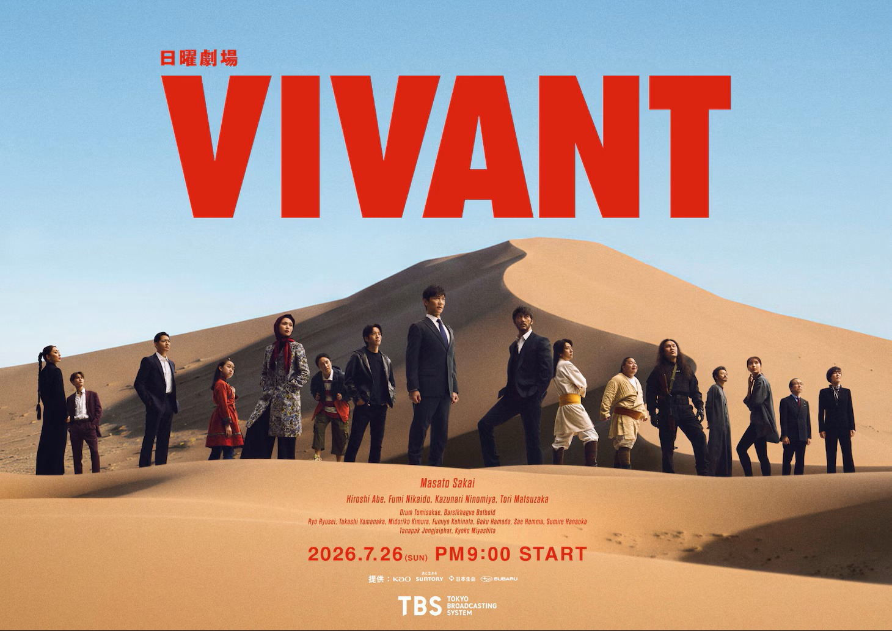
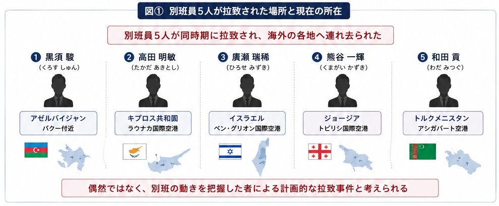
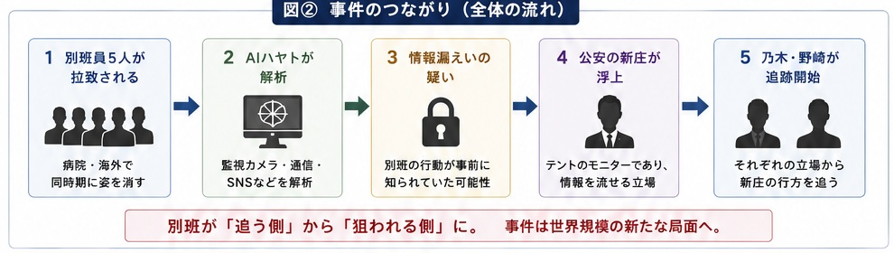
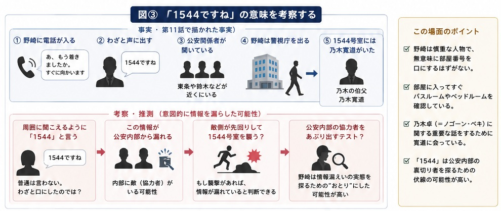

前作ラストから直結。
赤い饅頭、別班員5人拉致、そして「1544」の謎
前作の最終話から物語は途切れず再開。「赤い饅頭」の意味、別班を狙う新たな敵、AIハヤト、そして野崎が口にした「1544」。第2シリーズの幕開けを、重要な伏線とともに整理します。

1. 赤い饅頭が意味するもの
前作のラストで乃木の前に置かれた赤い饅頭。それはやはり、別班への緊急招集を意味していました。
薫、ジャミーンとの穏やかな日常を取り戻した乃木でしたが、その時間は長く続きません。前作のエンディングからそのまま物語が始まることで、「続編」ではなく、まさに物語の続きであることを強く印象づけます。
2. 世界各地で不穏な動きが始まる
新疆ウイグル自治区を出発する謎の集団、日本各地で相次ぐ病院の爆破事件、正体不明の人物たちの移動。最初は無関係に見える出来事が、後から振り返ると一つの事件へつながっていきます。
第1シリーズでも印象的だった、複数の伏線を先に提示して視聴者に考えさせる『VIVANT』らしい始まり方です。
3. 別班司令部とAI「ハヤト」
乃木は地下司令部へ向かい、櫻井から新たな任務を告げられます。今回、別班に新たに導入されていたのがAI「ハヤト」です。
監視カメラ映像、通信履歴、SNS、防犯カメラなど膨大な情報を解析し、人間では見落としやすい関連性まで導き出します。経験と勘だけではなく、AIによる情報解析が本格的に加わったことで、別班の捜査スタイルにも変化が見えます。
4. 別班員5人が一斉に消息を絶つ
AIハヤトの解析から、乃木以外の別班員5人がほぼ同じ時期に拉致されていたことが判明します。病院で療養していた隊員たちは監視カメラから姿を消し、バルカに残っていた黒須とも突然連絡が取れなくなります。
「別班が狩られる側になる」。第1シリーズではほとんどなかった展開です。
| 別班員 | 連れ去られた場所 |
|---|---|
| 黒須 駿 | アゼルバイジャン |
| 高田 明敏 | キプロス共和国・ラルナカ国際空港 |
| 廣瀬 瑞稀 | イスラエル・ベン・グリオン国際空港 |
| 熊谷 一輝 | ジョージア・トビリシ国際空港 |
| 和田 貢 | トルクメニスタン・アシガバート空港 |

5. 情報漏えいの先に新庄が浮上
AIハヤトが情報漏えいの経路を解析した結果、重要人物として浮かび上がるのが公安の新庄です。前作ではテントのモニターだったことが判明しており、別班員の情報へ接触できる立場でもあります。
この時点で黒幕と断定されたわけではありません。しかし「別班の行動が事前に読まれていた」という事実から、内部情報が漏れている疑いは強まります。
乃木と野崎は、それぞれ別班と公安という異なる立場から新庄の行方を追い始めます。

6. 丸菱商事にも新たな動き
日本では、バルカで発見されたフローライト鉱山の開発が本格的に動き始めます。丸菱商事は日本側の窓口として契約を進め、乃木の功績も正式に評価されます。
役員・本部長への昇進を打診されますが、乃木はそれを受けず、バルカの現地責任者として残ることを希望します。
※バルカ共和国はドラマに登場する架空の国家です。
7. ドラムとの再会
乃木が重要なデータを運ぶ途中、何者かに狙われます。その危機を救ったのがドラムでした。
前作で野崎の相棒として活躍したドラムは、今回も抜群の身体能力で乃木を支援します。短い登場ながら、前作からのつながりを強く感じさせる場面です。
8. 黒須を追ってバルカへ
乃木は黒須が最後にいた場所へ向かい、以前から隠していた小型カメラを回収します。映像には、黒須が何者かと接触した直後、麻酔銃で撃たれて連れ去られる姿が残されていました。
ノコルが口にしたこの言葉は、簡単そうに見えることでも油断せず慎重に取り組むという意味。乃木の徹底した準備と用心深さを象徴する場面です。
9. 拉致事件の全貌が見え始める
ブルーウォーカー太田の解析から、黒須を含む別班員5人がそれぞれ異なるルートで海外へ運ばれていたことが判明します。
一人ひとりが別の国へ散らされているにもかかわらず、最終的な目的地は共通している可能性が高い。事件は単なる誘拐ではなく、別班そのものを狙った組織的な作戦だと見えてきます。
10. キプロスで待っていた人物
乃木はドラムとともにキプロスへ向かい、そこで潜伏していたアリを捕らえます。
前作で命を救われ、ベネズエラへ逃れたはずのアリがなぜキプロスにいるのか。誰のために動いているのか。敵なのか、味方なのか。答えを残したまま第2話へ続きます。
11. 野崎がわざと「1544」と口にした意味
警視庁サイバー犯罪対策課で新庄の行方を追っていた野崎に電話が入り、野崎は「あ、もう着きましたか。すぐに向かいます」と答えたあと、周囲に聞こえる形で「1544ですね」と口にします。
向かった先はホテルニューオータニの1544号室。そこにいたのは乃木の伯父・乃木寛道でした。
可能性の一つは、あえて「自分は1544号室へ行く」と情報を流し、公安内部からその情報が敵側へ漏れるかどうかを確認すること。つまり、公安内部の協力者をあぶり出すためのおとりだった可能性です。
野崎は部屋に入るとバスルームやベッドルームまで確認しています。誰かが先回りしていないか、部屋が監視されていないかを警戒しているようにも見えます。
さらに、寛道と話す内容は「弟の乃木卓について」。新庄捜索と並行して、乃木卓＝ノゴーン・ベキの過去についても独自に調べていた可能性が浮かびます。

第2シリーズ 第1話で新たに分かったこと
| 項目 | 第11話終了時点 |
|---|---|
| 赤い饅頭 | 別班への新たな緊急招集だった |
| AIハヤト | 別班に導入された最新解析システム |
| 別班 | 黒須を含む5人が同時期に拉致される |
| 新庄 | 情報漏えいの重要人物として浮上 |
| 丸菱商事 | フローライト事業が本格始動 |
| ドラム | 再登場し、乃木を支援 |
| アリ | キプロスで再登場し、新事件との関わりが示唆される |
第2シリーズ 第1話の見どころ
最大の転換は、「別班が追う側から追われる側へ回る」こと。黒須を含む5人が一斉に拉致され、これまで圧倒的な実力を見せてきた別班が敵に先手を取られます。
AIハヤトの導入、新庄をめぐる情報漏えい疑惑、丸菱商事と別班の二つの顔を使い分ける乃木、そしてアリの再登場。前作の余韻を残しながら、より大きな事件へ進む新章の始まりとなりました。
第12話のあらすじ・伏線・考察へ